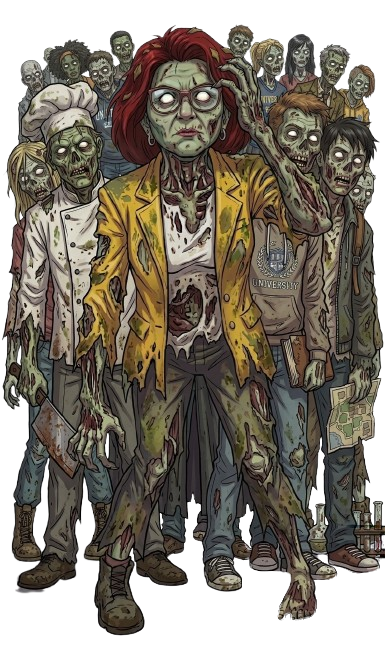
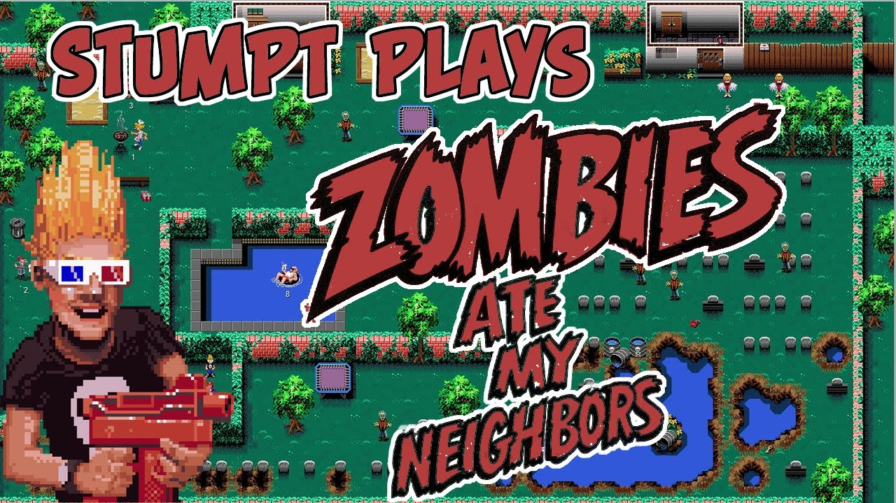
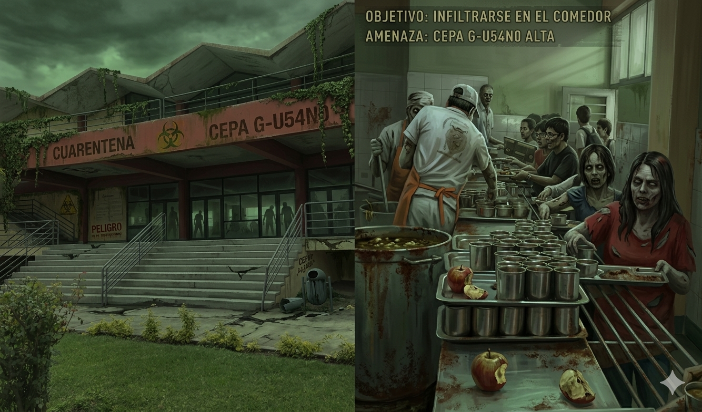

Mileynd J. Aguilar Morán
Facultad de Ciencias Matemáticas
Todo comenzó en el Comedor Universitario. Una filtración química contaminó el menú con la Cepa G-U54N0.
Los estudiantes infectados se convirtieron en "gusanos", zombis de piel verdosa que solo buscan repetir el plato.
[ESTADO DEL CAMPUS: CUARENTENA ABSOLUTA]

Es un juego de acción y rescate en perspectiva superior (top-down). Controlas a un estudiante que debe recorrer las facultades para localizar a sus compañeros y profesores antes de que la horda los alcance.
Todo comenzó en el Comedor Universitario. Una filtración contaminó el menú con la Cepa G-U54N0, convirtiendo a los estudiantes en zombis de piel verdosa.
Deberás explorar el mapa y recolectar sobrevivientes para finalmente encontrar el Cofre con la Cura enviado por el Centro de Salud.
[MISION: RESCATAR SOBREVIVIENTES - CUARENTENA EN CURSO]

Acción / Aventura / Rescate
2D Top-Down
(Vista desde arriba)
Single-player
> ENGINE_STATUS: OPTIMIZED | VIEWPORT: TOP_DOWN_ACTIVE
Mikel es un estudiante regular de la Facultad de Ciencias Matemáticas que evitó la infección por una razón muy sanmarquina: optó por almorzar un broaster fuera del campus el día del brote de la Cepa G-U54N0.
Se caracteriza por ser valiente y ágil. Utiliza su ingenio para convertir materiales de estudio y objetos deportivos en herramientas de defensa para rescatar a sus compañeros.
Protagonista (Mikel)
Sobrevivientes (NPCs):
Cofre de la Cura: Antídoto final en Rectorado.
Suministros: Piedras y Megáfonos aleatorios.
Cucharas: Recuperan 25% de HP (Energía del comedor).
[ ASSET_DATABASE_V7.0 | UNMSM_CAMPUS_RECORDS ]
Explorar las facultades y localizar a todos los estudiantes sobrevivientes para desbloquear los accesos.
La misión final es alcanzar el Cofre con el Antídoto ubicado en el Rectorado para salvar la universidad.
Superar la horda de infectados por la Cepa G-U54N0 en un entorno de cuarentena absoluta.
"El tiempo y la aglomeración de enemigos son tus peores obstáculos en el rescate."
Mikel se desplaza en 8 direcciones (incluyendo diagonales), permitiendo una evasión fluida entre las hordas de la UNMSM.
Sistema de Colisiones: El motor físico impide atravesar paredes, carpetas o muros de las facultades, obligando a planificar rutas de escape tácticas.
SISTEMA DE INPUT: TECLADO DETECTADO | TASA DE RESPUESTA: 1ms
Evaluación de desempeño basada en eficiencia, exploración y supervivencia en el campus.
| Rescate de sobrevivientes | +100 pts |
| Finalización de nivel | +500 pts |
| Tiempo restante | Variable |
| Uso eficiente de recursos | Bonos % |
Daño recibido (Impacto) -10 pts
Derrota / Game Over REINICIO NIVEL
[ RENDIMIENTO TOTAL: S+ RANK ]
ACCESO DESBLOQUEADO
En cada nivel hay un número determinado de estudiantes sobrevivientes esperando ser localizados.
Mecánica de contacto: Para rescatarlos, el jugador simplemente debe caminar sobre ellos para sumarlos al grupo.
La salida al siguiente nivel permanece sellada hasta que el contador de rescatados llegue al 100%. No se deja a nadie atrás.
Mikel utiliza su ingenio y objetos del campus para repeler a la horda.
Mikel usa un Lanzador de lapiceros modificado para mantener a raya a los zombis.
Recoge piedras del suelo. Causan más daño y aturden al enemigo por 1 segundo.
Al encontrar un Megáfono, emite una onda sonora que empuja a todos los zombis cercanos.
ADVERTENCIA: NO PERMITA QUE LA HORDA SE ACERQUE
MUNICIÓN (Q)
●●●○○ESPECIAL (E)
READYBarricadas en pasillos que fuerzan la búsqueda de rutas alternativas.
Bloqueos de cuarentena que cierran salidas y obligan el paso por jardines.
Efecto de niebla: campo visual reducido a un pequeño círculo.
Aparición repentina de hordas masivas en los bordes del mapa.
Suelo resbaladizo que altera la inercia y velocidad de Mikel.
Atraen a los zombis a un punto fijo. ¡Momento de usar el Megáfono!
Puerta de salida bloqueada por defecto. Se requiere el 100% de sobrevivientes del mapa para habilitar la transición de nivel.
Piedras: Máximo 5 unidades.
Megáfono: Cooldown de 10 segundos.
Patrullaje errático. Al perder de vista al jugador, el enemigo mantiene el rastro por 3 segundos antes de regresar a su ruta original.
Se alcanza al completar el Nivel 3 y colisionar con el objeto "Cofre de la Cura" en el Rectorado.
¿PREPARADO PARA SALVAR A LA UNMSM?
Perspectiva: Cámara Top-Down (Cenital). Atmósfera: Campus oscuro con ecos de "¡Quiero mi almuerzo!".
El punto de partida. Entorno familiar de pasillos, pizarras y carpetas.
Zona Cero: Punto de origen de la Cepa G-U54N0. Espacios angostos y oscuros.
Travesía final por el corazón del campus hasta la Biblioteca Central.
Se ha elegido el Pixel Art para otorgar un toque retro y carismático al juego, optimizando la creación de animaciones fluidas para Mikel y las hordas de infectados.
Verde Radioactivo
Infectados y Cepa G-U54N0
Gris y Guinda
Edificios y Uniforme de Mikel
Rojo y Amarillo
Alertas y Cucharas de Energía
RENDER_MODE: PIXEL_PERFECT | BIT_DEPTH: 16-BIT_STYLE
[ PYGAME_ENGINE: ACTIVE ]
PC (Windows)
Código puro utilizando Pygame
"Se opta por esta tecnología para demostrar un manejo sólido de las estructuras de datos y lógica de programación sin depender de motores gráficos pesados."
$ pip install pygame
> Requirement already satisfied: pygame in /usr/local/lib/python3.x
> Initializing game_logic.py ... [OK]
Objetivos de la Versión Mínima Funcional establecida para el desarrollo del curso.
MISIÓN CUMPLIDA // ANTÍDOTO ENTREGADO CON ÉXITO